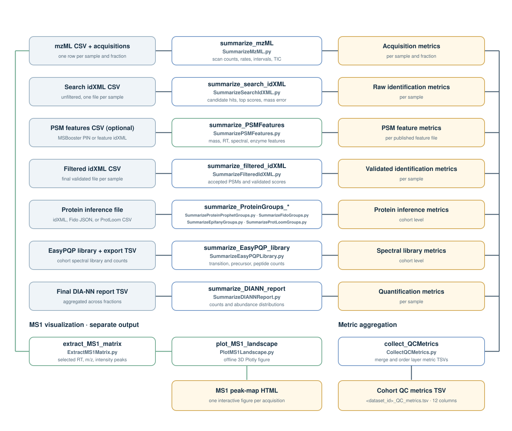

Quality control
The QC pipeline brings together acquisition, identification, protein-grouping, library, and quantitation summaries. It also creates interactive MS1 peak maps to help you inspect the acquisitions.

Open the original flowchart at full size.

How it works
- Extract acquisition metrics from mzML files or the original Bruker
.ddirectories. - Summarize unfiltered search results, filtered identifications, and available MSBooster feature files.
- Summarize the selected protein groups and the evidence exported for library generation.
- Summarize the DIA-NN report and produce metric tables and Plotly MS1 peak maps.
This step reports what happened during the analysis; it does not change identification thresholds or quantitation results. Sample-level quantitation summaries and acquisition-level summaries describe different units when samples have multiple fractions.
Inputs and outputs
SpectroMesa-DIA supplies all result files and manifests automatically. For Bruker data, the acquisition manifest retains both the reconstructed mzML used for search matching and the original .d path used for acquisition QC.
Outputs include QC TSV files and interactive HTML peak maps. The selected pyOpenMS image must support BrukerTimsFile for .d input; the default QC image uses pyOpenMS 3.6.0. Plotly is supplied by the configured MultiQC image. See Understanding results for output locations.
Parameter reference
Use the qc_ProteomicDIA block inside params in your run configuration. Values below describe this step as used by SpectroMesa-DIA. Settings marked automatically supplied do not need to be repeated.
Software and containers
These defaults record the software environment. When replacing an image, check its compatibility with the workflow; a version label alone does not guarantee the required tools are installed.
| Parameter | Type | Default / supplied value | Meaning |
|---|---|---|---|
docker_image_plotly |
Text | multiqc/multiqc:v1.35 | Container image used for plotly. Change only when using a compatible replacement image. |
pyopenms_version |
Text | 3.6.0 | Lab pyOpenMS container version |
docker_image_pyopenms |
Text | ghcr.io/theboutroslab/pyopenms:3.6.0 | Container image used for pyopenms. Change only when using a compatible replacement image. |
Automatically supplied settings
| Parameter | Type | Default / supplied value | Meaning |
|---|---|---|---|
dataset_id |
Text | Shared dataset_id | Analysis name used to organize and name outputs. |
mzml_csv |
Path | Generated acquisition manifest | CSV with sample_name,fraction_id,path and optional acquisition_path (.mzML or Bruker .d); one row per sample/fraction pair |
search_idxml_csv |
Path | Generated search-result manifest | Metapipeline validation.csv with sample_name,search_engine,idXML |
filtered_idxml_csv |
Path | Generated filtered-identification manifest | CSV with sample_name,idXML for final filtered validation results |
psm_features_csv |
Path | Generated PSM-feature manifest | Optional sample_name,search_engine,route,fraction_id,path manifest for published MSBooster PIN or PSMFeatureExtractor idXML files |
inference_route |
Text | Selected validation protein-grouping method | ProteinProphet, Fido, or Epifany, matching the validation step. |
protein_groups |
Path | Protein groups from validation | Cohort idXML for ProteinProphet or EPIFANY, or the Fido groups JSON. |
library_tsv |
Path | Generated EasyPQP TSV | EasyPQP library TSV |
export_summary_tsv |
Path | Validation export summary | Validation EasyPQP export summary TSV |
diann_report |
Path | Final DIA-NN report | Final aggregated DIA-NN report TSV |
output_dir |
Path | Assigned within the analysis output | Destination for this step. Set the shared output_dir for the complete analysis. |
Computing and temporary files
The shared parameter reference describes CPU, memory, work-directory, and container-cache settings. This pipeline declares: work_dir, base_resource_update, max_cpus, max_memory, min_cpus, min_memory, resource_allocation_profile_tag, ucla_cds.
The tables were checked against the individual pipeline configuration and the SpectroMesa-DIA settings that select this workflow.
Related steps
Overview · Shared parameters · Configuring an analysis